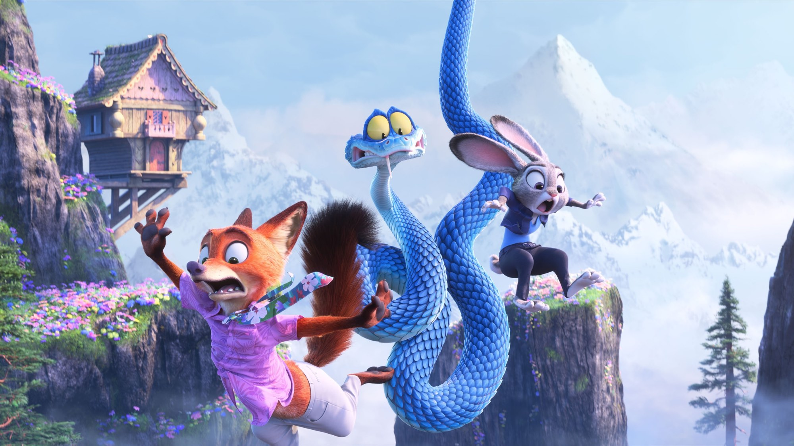
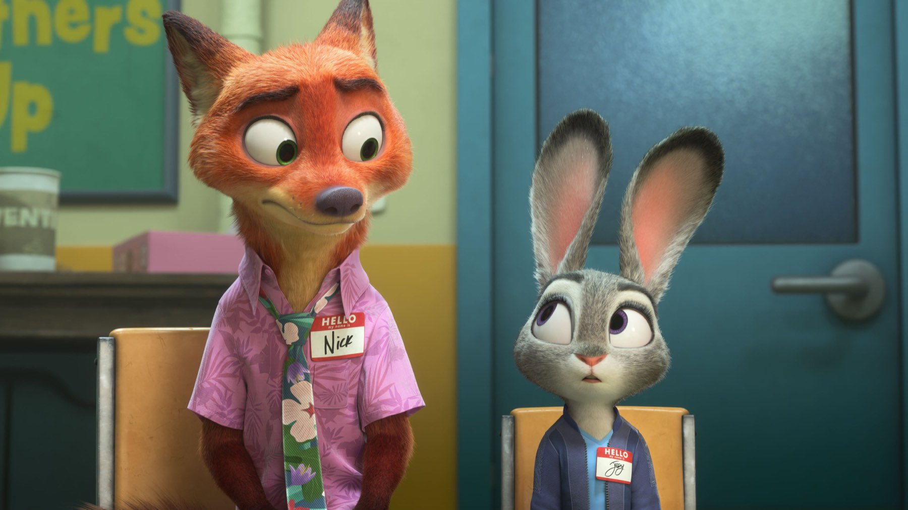
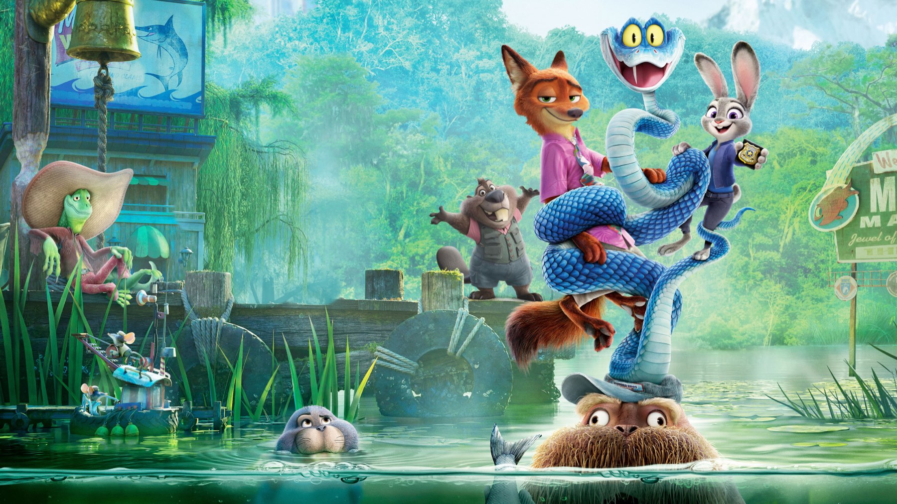

Zootopia 2
Nove anni dopo, Judy e Nick tornano in fuga per una città che nasconde un passato scomodo: un sequel divertente, curatissimo e più maturo di quanto sembri
Sono passati nove anni dal primo film, ma per Judy Hopps e Nick Wilde è trascorsa appena una settimana. Zootopia 2, uscito in Italia come Zootropolis 2 il 26 novembre 2025, riparte esattamente da dove ci eravamo lasciati: la coniglietta poliziotta e la volpe truffatore sono diventati partner in divisa, e devono ancora imparare a lavorare insieme. Jared Bush, autore della sceneggiatura, e Byron Howard firmano un seguito che ha il raro pregio di non limitarsi a ripetere la formula.
Di cosa parla Zootopia 2?
Judy e Nick vengono incastrati per un crimine che non hanno commesso e diventano fuggitivi nella loro stessa città. Per dimostrare la loro innocenza devono rintracciare Gary De'Snake, una vipera arrivata a Zootropolis che ha messo tutti in allarme, e così scoprono una pagina nascosta della storia della metropoli, quella dei rettili, che qualcuno ha preferito cancellare. Senza rivelare altro, la caccia li porta in quartieri mai visti prima, dalle paludi ai mercati.
Tornano Ginnifer Goodwin e Jason Bateman nelle voci originali dei due protagonisti, mentre Ke Huy Quan presta la voce a Gary. Nel cast vocale anche Fortune Feimster, Andy Samberg, David Strathairn, Idris Elba e Shakira, di nuovo nei panni della popstar Gazelle.

Perché funziona
Il primo Zootopia era una commedia poliziesca che parlava di pregiudizi con una leggerezza sorprendente. Il seguito alza il tiro: il giallo è più articolato, con echi di classici del noir come Chinatown e L.A. Confidential che Marco Tedesco del Cineocchio riconosce giustamente nella struttura, e il tema dell'esclusione diventa ancora più centrale. Gary, il serpente che tutti temono, è il simbolo di chi viene giudicato mostruoso prima ancora di essere conosciuto.
La coppia Judy-Nick funziona meglio che mai. Il film dedica parecchio spazio al loro rapporto, alle incomprensioni e alla fiducia da costruire, con un umorismo che arriva a tutte le età. E l'animazione è semplicemente straordinaria: ogni quartiere ha un'identità visiva precisa, i dettagli di sfondo sono pieni di gag e le scene d'azione hanno il ritmo di un vero film d'inseguimento.
Un giallo animato che parla di chi viene escluso, e fa ridere.
Cosa non funziona
Qualche passaggio della trama è un po' affollato di personaggi secondari, e la seconda metà rallenta prima di un finale piuttosto prevedibile. Il messaggio, in alcuni momenti, è sottolineato con più insistenza del necessario. Difetti piccoli in un film che, per quasi tutta la sua durata di 108 minuti, si guarda con piacere da adulti e da bambini.

Un record al botteghino
Il pubblico ha risposto come raramente succede: a fine corsa, con 1,87 miliardi di dollari nel mondo, Zootopia 2 è il secondo film d'animazione con il maggior incasso della storia. La critica lo ha accolto bene, con il 92% di recensioni positive su Rotten Tomatoes e 73 su Metacritic. Nei mesi successivi all'uscita, a febbraio 2026, ha vinto il BAFTA come miglior film d'animazione ed è stato candidato all'Oscar.
Dove vedere Zootopia 2
Dall'11 marzo 2026 il film è disponibile in abbonamento su Disney+, ed è a noleggio sulle principali piattaforme digitali come Apple TV, Rakuten TV, Timvision e Prime Video. Il 15 agosto 2026 Disney ha annunciato che è in sviluppo un terzo capitolo.
Se da un lato il finale è prevedibile e il messaggio a volte troppo esplicito, dall'altro Zootopia 2 è un sequel brillante, con una coppia di protagonisti irresistibile, un giallo ben costruito e un'animazione da applausi. Uno dei migliori film per famiglie del 2025.
Domande frequenti
Come si chiama Zootopia 2 in Italia?
In Italia il film è uscito con il titolo Zootropolis 2, il 26 novembre 2025.
Dove vedere Zootopia 2 in streaming?
In abbonamento su Disney+, dove è disponibile dall'11 marzo 2026, e a noleggio sulle principali piattaforme digitali.
Quanto ha incassato Zootopia 2?
Circa 1,87 miliardi di dollari nel mondo: è il secondo film d'animazione con il maggior incasso di sempre.